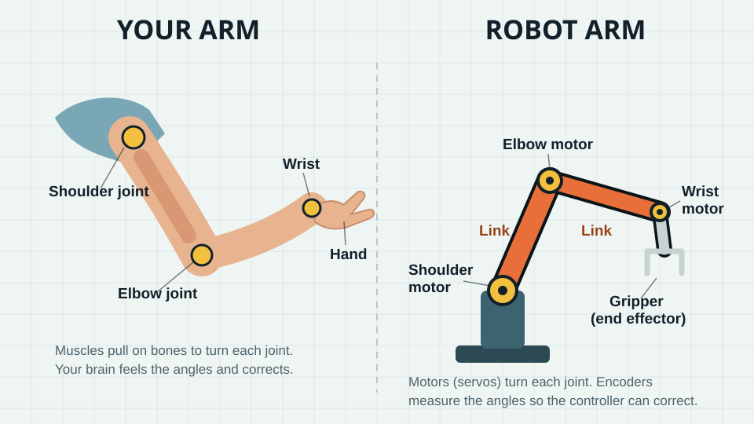

A robot arm has a shoulder, an elbow, and a wrist, just like you! Move each joint to steer the hand, or tap where the hand should go and let the robot figure out how to bend. Then pick up the colored blocks and put them on their matching pads.
Factories, hospitals, and the space station all rely on robot arms. Every arm faces the same two-way problem. Turn the joints and ask where the hand ends up: that's forward kinematics, and it's easy. Pick where the hand must go and ask how to bend the joints: that's inverse kinematics, and it's where the interesting math lives.
Ages 6–18 · 3 levels45–60 minutesPick-and-place simConfiguration space
Hold your arm out. Now bend it at the shoulder, then the elbow, then the wrist. Those bending places are called joints.
A robot arm has joints too! Each one has a little motor that turns it. The stiff parts between the joints are called links, like the bones in your arm.
At the end of the arm is a gripper, the robot’s hand. Mine has two fingers that squeeze together to pick things up.
Here is a puzzle: when you want to touch your nose, you don’t think “shoulder up a little, elbow bend a lot.” Your brain just does it! A robot has to figure out every joint with math.
Joint · a place that bends or turns
Link · a stiff part between joints
Gripper · the robot’s hand
Reach · how far the hand can go
Try it with your body
Robot Simon Says. Your partner can only give joint commands: “shoulder up,” “elbow bend,” “wrist turn,” “squeeze.” Can they guide your hand to pick up a cup? It’s harder than it sounds!
Stiff elbow. Keep your elbow perfectly straight. Can you still scratch your nose? Losing one joint shrinks what you can reach.
Build an arm. Cut three strips of cardboard. Join them with brass paper fasteners for joints. Tape a clothespin on the end as the gripper. How many ways can it reach the same spot?
Anatomy of an arm
Links, joints, and a gripper
A robot arm is a chain. Stiff links are connected by joints, and each joint is turned by an actuator, usually an electric motor with a gearbox and an encoder that measures its angle. The tool at the end is the end effector: a gripper, suction cup, welding torch, or paint sprayer.
Degrees of freedom
Each joint adds one degree of freedom (DOF). To put a tool anywhere at any angle in 3-D space takes 6 DOF: three for position and three for orientation. Most factory arms have exactly 6. Your arm has 7, so you can move your elbow while your hand stays still.
Revolute vs. prismatic
A revolute joint rotates, like a hinge. A prismatic joint slides, like a drawer. A 3-D printer is all prismatic joints. The arm in our sim is all revolute.
Workspace
The workspace is every point the end effector can reach. Longer links reach farther, but they're heavier and need stronger motors near the base. The dashed arc in the sim marks the edge of our arm's reach.

Same parts, different materials Muscles and bones become motors and links. Your nerves sense joint angles; a robot uses encoders. Both need a controller (brain or computer) that turns “put the hand there” into an angle for every joint.Diagram: Mr. Scandrett’s ClassroomOS
Sim · Pick and place
Stack the blocks
Your job: put each block on the pad with the same color. Tap or click anywhere and the arm reaches there. When the gripper fingers are around a block, press Close gripper. Move the arm over the right pad and press Open gripper to let go.
Two ways to drive the same arm. Joint mode is forward kinematics: you set θ1, θ2, θ3 and the hand goes wherever the math says. Reach mode is inverse kinematics: click or drag a target and the arm solves for the angles, keeping the gripper pointed straight down for a top grasp. Put every block on its matching pad.
Links
Joints (motors)
Reach
R block · B block · Y block
Keyboard: Tab into the bench. ←↑→↓ move the reach target, Q/A shoulder, W/S elbow, E/D wrist, Enter grip or release.
0 / 3 blocks home
1 · One joint at a time
Press Joints. Move only the shoulder slider. What shape does the hand draw? Now try only the elbow.
2 · Too far!
Tap way up in the top corner. Can the arm reach it? What does it do instead?
3 · Blocks home
Put all three blocks on their pads. Can you stack one block on top of another?
1 · Predict, then check
In Joint mode, set θ1 = 90°, θ2 = 0°, θ3 = 0°. Predict where the gripper points. Then try θ2 = −90°. Use the readout to check.
2 · Two answers
In Reach mode, park the target on a block and switch between elbow up and elbow down. The hand doesn't move. What does? When would a real robot prefer one shape over the other?
3 · Edge of reach
Drag the target just past the dashed arc. Why does the arm go straight right at the edge? Why are tasks at full stretch slow and imprecise on real arms?
The math, both directions
Forward is easy. Inverse is a puzzle.
Forward kinematics
Add up the links like arrows, each at its total angle. For two links:
x = L₁ cos θ₁ + L₂ cos(θ₁ + θ₂) y = L₁ sin θ₁ + L₂ sin(θ₁ + θ₂)
One set of angles → exactly one hand position. It's just unit-circle trig, repeated once per link.
Inverse kinematics
Now go backward: you know (x, y) and want θ₁, θ₂. The shoulder, elbow, and hand form a triangle with sides L₁, L₂, and d = √(x² + y²). The law of cosines gives the elbow:
cos θ₂ = (x² + y² − L₁² − L₂²) / (2 L₁ L₂)
If the right side is outside −1…1, the point is out of reach. Otherwise θ₂ = ±arccos(…): two answers, elbow up and elbow down.
Then the shoulder
θ₁ = atan2(y, x) − atan2(L₂ sin θ₂, L₁ + L₂ cos θ₂)
The sim does exactly this for the wrist point, then sets θ₃ so the gripper points straight down: θ₁ + θ₂ + θ₃ = −90°.
Sim · Configuration space
Where can the arm be?
Here's a two-link arm with two rocks in the way. On the right is its configuration space (C-space): every possible pair of angles (θ1 across, θ2 up). Each pixel is one pose of the whole arm. Orange pixels are poses where some part of the arm hits a rock.
The tangled rock in the room becomes a huge, strange shape in C-space. But in C-space the arm is just a dot, and planning a safe arm move becomes planning a path for a dot, which is what A* and RRT already do.
Mouse: click or drag in the right square to pose the arm, Shift-click to set the goal, click in the room to move the nearest rock. Keyboard: ←→ θ1, ↑↓ θ2 (Shift for 15°), G goal, P plan.
1 · Read the map
Drag the white dot into an orange region. What happens to the arm on the left? Find a pose where only the elbow link hits a rock.
2 · Plan around
Set a goal on the far side of an orange blob, move back, and press Plan a path. Why does the yellow path sometimes leave one edge of the square and come back in on the opposite edge?
3 · Split the space
Move the rocks until Plan reports “no path.” What happened to the free (dark) region? Describe the arm poses that can't reach each other.
Engineer deep dive
Jacobians, singularities, and six jointsAges 15+
The Jacobian
Velocities are related by a matrix of partial derivatives:
where s₁₂ = sin(θ₁ + θ₂). J tells the controller which joint speeds produce a desired hand speed: θ̇ = J⁻¹ẋ.
Singularities
det J = L₁ L₂ sin θ₂
When θ₂ = 0 (fully stretched) or 180° (folded back), det J = 0 and J can't be inverted. The hand can't move along the arm's length no matter how fast the joints spin. Near a singularity, tiny hand motions demand huge joint speeds, so real controllers slow down or use the damped pseudo-inverse JT(JJT + λ²I)⁻¹.
Numerical IK
Past three joints, closed-form answers get hard or don't exist. Iterative solvers step toward the target instead: Jacobian transpose, damped least squares, CCD (cyclic coordinate descent: rotate each joint in turn to point at the target), or FABRIK, which drags the chain like a rope. Game engines use FABRIK for characters' arms and legs.
Six joints, decoupled
Most industrial arms have a spherical wrist: the last three axes meet at one point. Pieper's 1968 result says this lets you split IK in two: solve the first three joints for the wrist position, then the last three for orientation. Our sim's top-down grasp is the 2-D version of that trick. Arms are described with Denavit–Hartenberg parameters, four numbers per joint.
Where you’ll see it
Arms at work
Click any photo to enlarge it.
A six-joint factory arm This KUKA arm has six revolute joints, enough to hold a tool at any position and any angle. Here it rakes an art piece into sand; in factories, arms like it weld car bodies and stack boxes.Photo: Oleg Yunakov · CC BY-SA 4.0 · Wikimedia CommonsCanadarm2 in orbit The space station’s arm is 17.6 m long with 7 joints. Both ends are identical, so it can “walk” end over end across the station. Astronauts and ground teams plan each move carefully: a collision in space can’t be undone.Photo: NASA · Public domain · Wikimedia Commons
Build one
A hobby servo holds an angle you command, which makes it a ready-made revolute joint. Three servos and some craft sticks make a desk arm. See Outputs Beyond the LED for servo wiring.
Gears and torque
The shoulder motor lifts everything beyond it, so it needs the most torque. Arms use heavy gear reduction at the base. Explore why in Mechanisms & Gears.
Feedback
Every joint runs its own PID loop: encoder angle in, motor power out, hundreds of times a second.
Robot autonomy series
Sense · Think · Act
Quick check
Lock it in
1. What is a joint?
2. Which part picks things up?
3. You tap far away and the arm stretches out straight but can't touch the spot. Why?
1. You know all the joint angles and calculate where the gripper is. What is that called?
2. Why does a two-link arm usually have two IK solutions for one target?
3. Why do most factory arms have six joints?
4. Why do engineers plan arm motions in configuration space?
5. For a two-link arm, when is the Jacobian singular?